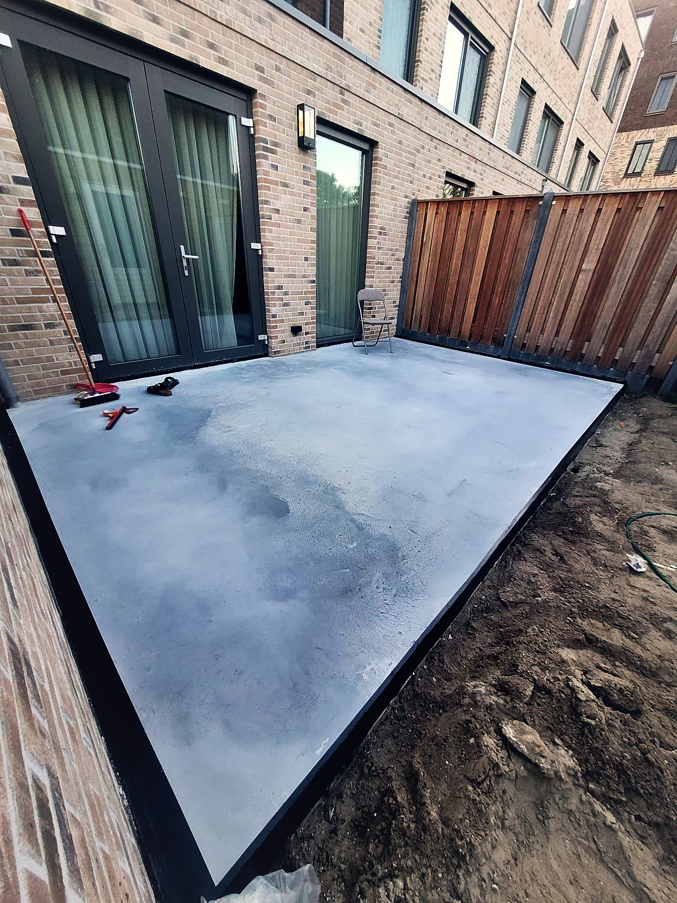
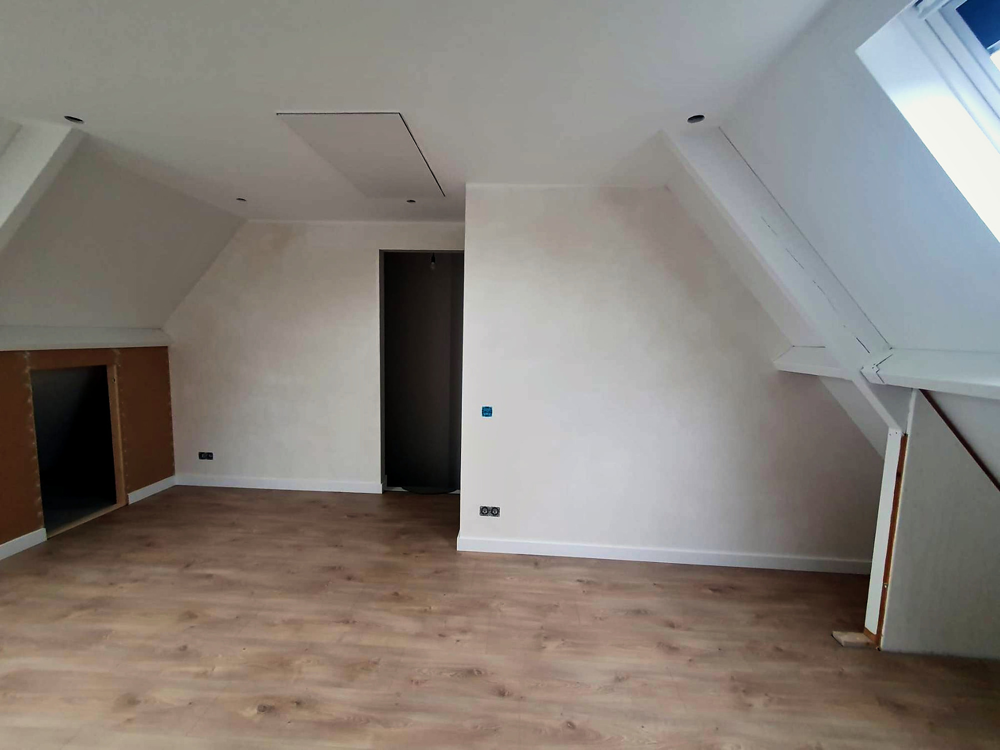

01↗
Betonvloeren
Gestort, geëgaliseerd en machinaal gevlinderd
De map schuift open en onthult het werk. Ernaast: alles wat we binnen die dienst oppakken.

Gestort, geëgaliseerd en machinaal gevlinderd
Binnen en buiten, van een garage tot een compleet terras — inclusief isolatie, wapening en vloerverwarming.

Van ongebruikte zolder naar volwaardige kamer
Van draagconstructie tot het laatste likje verf — u kunt er zo intrekken.